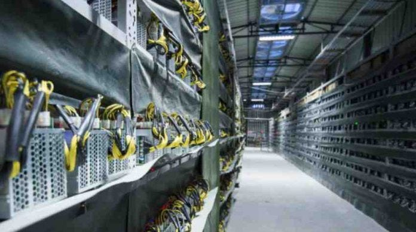
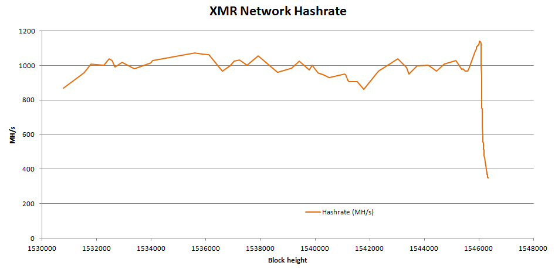

Day17|關於挖礦的兩三事(2)：抗ASIC演算法
Bitcoin被ASIC攻陷
對於Bitcoin而言，一個合規的nonce是這樣被尋找到的：透過不斷改變nonce的值再跟前一個區塊的hash(previous_hash)、所有交易的hash值構成merkle tree的根merkle_root透過SHA-256函式計算哈希值後確認是否合規，直到找到一個合規的found_hash為止(為了方便舉例，除了這三個輸入參數外的都先忽略)。
found_hash = sha256(previous_hash, merkle_root, nonce)
也因此運算的瓶頸就在Bitcoin所使用的SHA-256演算法，如果能夠在同一時間大量、重複的運算就可以在挖礦中取得極大的優勢，因此這種計算方式極度適合ASIC，也導致了在ASIC進入挖礦市場後便迅速成為了Bitcoin的主流挖礦硬體，徹底把家用CPU/GPU從這場挖礦大戰中掃了出去。

圖片來源：Bitmain
用CPU挖能挖多少？
或許你還是很難想像ASIC與家用CPU/GPU的效能差異，這裡頭列了幾個家用硬體的算力值，GPU目前頂多約1000Mh/s、AMD架構的CPU頂多100Mh/s，對比ASIC目前至少有10Th/s起跳的算力(Bitmain最新的機台甚至可以達到64Th/s)，兩者間的實力整整差了數萬到數十萬倍 ，也就是你用家用電腦挖一整年Bitcoin大概也只能挖....5塊台幣的Bitcoin。
註：Mh/s：10^6 hash/s ; Gh/s：10^9 hash/s、Th/s ; 10^12 hash/s
ASIC帶來極度中心化的疑慮
ASIC除了帶來算力的增長外，同時也壟斷了挖礦的方式，在過去想要參與挖礦與記帳的用戶只需要使用原本的家用電腦便可以參與，但如果現在想要參與挖礦就必須至礦機製造商添購礦機，無形中拉高了一般人參與的門檻，同時也造成了挖礦變成一個極度中心化與專業化的行業，也產生一旦礦機商在挖礦硬體植入後門，整個Bitcoin就會毀於一旦，這些都與原本的去中心化的精神越走越遠，於是乎對抗ASIC的呼聲也越來越大。

圖片來源：Mining Centralization Scenarios
Ethereum如何對抗ASIC
挖礦的總出塊利潤是固定的，一有利潤就會有人想研製特別的硬體(ASIC)專門投入挖礦來取得比別人更大的優勢，為了對抗ASIC造成後續中心化與門檻提高的問題，Ethereum於是從挖礦的演算法著手，設計出不適合ASIC運算的演算法來抵抗威脅。
Dagger-Hashimoto演算法
Ethereum的挖礦演算法叫做Dagger-Hashimoto，簡稱為Ethash，是把Thaddeus Dryja發明的Hashimoto演算法加入Ethereum創始人Vitalik Buterin發明的Dagger演算法後融合而成，特色是挖礦的效率基本上和處理器效能無關，而跟記憶體的頻寬成正相關。
為什麼透過頻寬就可以對抗ASIC呢？因為ASIC的原理是透過處理器電路的設計與數目的堆疊來加大計算固定演算法的速度，因此設計的核心數目越多、製程越高階，處理速度就能夠輾壓家用的CPU與GPU，但同時在這種設計下的記憶體是共用的，也就是說即使計算能力得到了提升，記憶體的速度仍然留在原地。
如果設計出一種以頻寬(傳遞資料的速度，不懂的話可以看這裡)決定運算能力的算法，因為每塊記憶體的頻寬跟處理器的控制單元數目都是固定的，因此通常增加記憶體的數目只能加大記憶體的容量，並沒有辦法加大頻寬 ，有點像是一座小島上只有一個港口能靠岸(下圖)，這時候在島上加蓋新房子的確能夠增加容納的人數(記憶體大小)，但運輸的效能(運算能力)取決在港口數目而絲毫沒有改變。要同時移動更多人(增加運算能力)，增加房屋(記憶體數目或容量)是沒有用的，只能增加手上持有的小島(機器)數目，因此ASIC並沒有辦法佔到太多便宜。(但雙通道、四通道的技術就另當別論，而且雙通道或四通道並不適用在有向無環圖演算法)。

我們來簡單說明一下Dagger-Hashimoto演算法是如何實做出來的。
有向無環圖(Directed Acyclic Graph，DAG)
在講解Dagger-Hashimoto演算法之前，來談一下有向無環圖(Directed Acyclic Graph，DAG)，一個典型的有向無環圖的定義如下：
- 該圖形的每條邊都有方向性(有向)
- 從圖中的任意點出發，無論路徑為何都無法回到起點(無環)

圖片來源：維基百科
Ethash的原理就是應用有向無環圖(DAG)，它的設計是每30000個Epoch(~5.2天)就會生成一個稍大一點的DAG，因此每過一個Epoch後為了產生新的DAG都會稍稍延遲，但因為Ethash的DAG只跟目前的區塊高度(數目)有關，為了避免等待，許多挖礦程式也會同時生成兩個DAG以免Epoch更新時的延遲。
Hashimoto演算法
Thaddeus Dryja提出的Hashimoto演算法期望透過I/O(輸入跟輸出)的頻寬來決定挖礦的能力以抵制ASIC，它的哈希算法步驟如下(這裡的⊕就是XOR運算、<<與>>分別是位元左移與右移)：
- 輸入前一個區塊的hash(
previous_hash)、交易明細組成的Merkle Tree的根merkle_root、欲挖掘的nonce透過SHA-256生成一個初始的hash_initialize(這一步就是Bitcoin產生hash的過程)。 - 讓i從從0到63，依序把
hash_initialize右移i個位元- 位移後除以交易個數後取餘數就可以得到要取出交易(
transaction) - 取出該筆的交易(
transaction)的交易序號(tx_id)後再左移i個位元
- 讓取得到的64組位元彼此依序做XOR運算得到最後的交易序號(
tx_id_final) - 讓
nonce左移192個位元 - 再讓最後的交易序號(
tx_id_final)與左移後的nonce做XOR運算 - 得到最後的
final_hash - 確認
final_hash是否合乎規定，不合的話就改變nonce後重新計算一次。
hash_initialize = sha256(previous_hash, merkle_root, nonce)
for i in range(0,64):
shifted_hash = hash_initialize >> i
transaction = shifted_hash % len(transactions)
tx_id[i] = get_tx_id(transaction) << i
tx_id_final = tx_id[0] ⊕ tx_id[1] … ⊕ tx_id[63]
final_hash = tx_id_final ⊕ (nonce << 192)
可以發現這個過程不停在讀取區塊鏈上的歷史交易紀錄，也同時在做記憶體的左移與右移，因此記憶體的頻寬決定了Hashimoto演算法的運算速度。
Dagger-Hashimoto
Dagger-Hashimoto加入Vitalik Buterin發明的Dagger演算法，相較於Hashimoto，Dagger-Hashimoto用一個有向無環圖(DAG)替代掉交易紀錄，也就是讓對歷史交易紀錄的讀寫變成對DAG的讀寫。
對Dagger演算法有興趣進一步了幾的話可以參考這裡。
簡單說明一下Dagger-Hashimoto中產生DAG的步驟：
- 計算出16MB大小的
cache - 透過這16MB的
cache生成1GB大小的DAG - 每隔30000個Epoch，因為硬體的進步就會讓
cache跟DAG也長大一些
如下圖所示，因為DAG是有方向性而且連續的，其資料的讀寫無法被平行化處理，所以雙通道、四通道的技術很難應用在Dagger-Hashimoto算法之上。比方說你的確可以把整個DAG切割成四個記憶體(RAM)儲存，但檢索時還是得從第一個RAM逐步檢索到最後一個RAM，因此多通道的技術並不能直接適用於DAG(當然你可以透過演算法嘗試解決，比如說紀錄該DAG於每塊記憶體的輸入與輸出藉此加速計算)。

其他種抗ASIC演算法
XMR與ASIC開發商的戰爭
XMR(門羅幣)最初採用的是CryptoNight演算法，該演算法的特色是需要一個2mb的cache(快取記憶體)支撐，也因為CPU的cache相較於GPU還是有優勢的，因此在CryptoNight的算法上GPU雖然還是相對有一些優勢，但兩者的差異不大。但CryptoNight終究還是被礦機製造商攻破，開發出了算力高達220Kh/s的礦機，即便是與算力最高的顯示卡VEGA系列(大概擁有2Kh/s的算力)比較，也整整高出了超過一百倍(更何況大部分顯卡都只有400-700h/s)！
為了應對這種狀況跟未來持續可能發生的威脅，XMR決定每年會固定時間更改參數，徹底杜絕ASIC(還記得ASIC只能運算同算法同參數嗎？)。
下面可以看到XMR改變算法與參數後，一堆ASIC被洗出去造成全網算力驟降的情形：

圖片來源：Reddit
X11、X13、X15、X17...
另一種對抗ASIC的路線就是混合各種不同的演算法，因為ASIC只能針對特定演算法做優化，於是根據現在的時間、區塊高度、交易紀錄等參數隨機決定要用哪一種算法，藉此來抵制無法隨意切換算法的ASIC。順帶一提，這裡的11、13、15、17分別代表了其中混合了幾種不同的挖礦演算法。
究竟有沒有必要對抗ASIC？
我覺得這篇整理的觀點非常好，究竟有沒有對抗ASIC的必要一直是熱門的討論議題，兩派的論點大致如下：
- 支持對抗ASIC：
- ASIC的出現讓一般人參與的門檻拉高
- ASIC讓礦機製造商把持多數算力，違背去中心化的精神
- 反對對抗ASIC：
- 固定更改演算法會有非常大的風險
- 修改算法後都會造成一陣子算力的流失與低落(因為ASIC剔除後算力下降，但出塊難度尚未來的及調整過來，礦工無利可圖)，此時缺乏算力的情形下非常容易被攻擊。
- GPU的礦場也有中心化的問題。
- 剔除了ASIC只會讓製造商改用FPGA應對，但純對抗沒有辦法徹底解決問題。
- ASIC的出現是因為人性的貪婪，是必然而非偶然無法避免。
不管ASIC的出現是好是壞，礦工間的戰爭，還在持續著。
Ref:
- Wikipedia-Directed acyclic graph
- Wikipedia-Dagger-Hashimoto
- Wikipedia-Ethash
- 每天五分鐘，玩轉區塊鏈(14)：以太坊簡介
- 電腦記憶體雙通道、四通道記憶體對遊戲重要嗎？
- What actually is a DAG?
- Hashimoto: I/O bound proof of work
- Dagger: A Memory-Hard to Compute, Memory-Easy to Verify Scrypt Alternative
- 以太坊原始碼分析—Ethash共識演算法
- Is The War Against ASICs Worth Fighting?